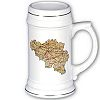

De: La Frikipedia, la enciclopedia extremadamente seria.
De: La Frikipedia, la enciclopedia extremadamente seria. De: La Frikipedia, la enciclopedia extremadamente seria.
| De la serie Países del planeta tierra: | |||||
| "Koninkrijk Vlaanderen" "Royaume de Wallonie" "Reichskommissariat Belgischen" Reino de Bélgica | |||||
|---|---|---|---|---|---|
| |||||
| Lema: "Si te invaden, no temas, Inglaterra o Francia vendrán a ayudarte" | |||||
| Himno: "Muerte al Reich"
| |||||
| 
| |||||
| Capital | Bruselas | ||||
| Mayor ciudad | Bruselas | ||||
| Lenguas oficiales | Holandés, francés y teutón | ||||
| Gobierno | Monarquía absolutista democrática | ||||
| Rey | Balduino II "el leproso" | ||||
| Área | Entre el Reich y la Republique | ||||
| Población | 0 belgas 6.000.000 flamencos 4.000.000 valones | ||||
| Moneda | Franco de la Marca | ||||
| Zona horaria | GTM+1 | ||||
| Dominio Internet | .val; .flan | ||||
| Código telefónico | | ||||
Bélgica es un pequeño país de Europa occidental poblado por 4 millones de valones y 6 millones de flamencos, más algunos grupos de alemanes descarriados. Su gobierno dice que es un país, pero en realidad son dos: Flandes y Valonia (burdos apéndices de Holanda y Francia, respectivamente). Según Alemania, Bélgica les pertenece. Bélgica se fundó en 1830 gracias a un grupo de franceses armados con garrotes que masacraron a los soldados holandeses de los alrededores de Bruselas. Los idiomas que se hablan son el francés y el holandés, cosa que indica claramente que Bélgica es un país sacado de la chistera de algún político gordinflón con monóculo. Bélgica perteneció anteriormente a muy dispares imperios, como la Francia napoleónica, el imperio austríaco y... España, que tenía a los Tercios de Flandes allí, como no.
Las tradiciones belgas consisten en batallas campalas a botellazos entre valones y flamencos, la pintura renacentista estilo flamenco (con menos culo que la italiana, por desgracia), ser invadidos por Alemania, leer cómics de Tintín, y otros pormenores conocidos sólo a nivel local. Religiosamente hablando, los belgas no van mucho a misa, pero más que los franceses. Se dividen entre católicos al sur y demonios herejes calvinistas luteranos cabrones al norte. Aunque España desplegó a la Santa Inquisición allí, no se logró mucho.
Antes del nacimiento de Jesucristo y en la época de Asterix y Obélix, Bélgica estaba poblada por tribus de bárbaros celtas amantes de las patatas fritas, las peleas a botellazos entre ellos, y a invasiones a nado de la costa sur inglesa. Tras su conquista de la Galia, Julio César se enfrentó a estos belgas enviando a legiones de aldeanos de Capua, al general Máximo Décimo Meridio y a dos divisiones aerotransportadas, la 101 Augusta Gallica, y la 82 Italica, formada por voluntarios fascistas de Mediolanum (Milán). Los belgas unieron fuerzas con los germánicos de la frontera y se enfrentaron a César en un pantano cerca de Bruselas. A pesar de su mal gusto, su dieta mantequillosa y su evidente idiotez, los celtas se batieron bien, pero al contar sólo con espadones de dos metros y no tener más que un taparrabos como armadura, las legiones los aniquilaron fácilmente. Este hecho fatídico para los celtas belgas aconteció allá por el año 50 a.C. Luego del combate, sin embargo, soldados germanos capturaron y ejecutaron a varias docenas de legionarios cerca de Málmedy, vengando así la derrota de los belgas, cuyas mozas iban a engrosar los harenes del rey Arminio de los queruscos, según el pacto entre belgas y germanos.
Julio César dejó como fuerzas de ocupación a la 1ª Legión Valeria Victrix (Más conocida como la "Big Red One"), cuyos brutales batallones de camisas pardas y gladiadores cometieron muchos abusos contra los belgas. Esta mala situación de opresión sólo duró 5 siglos, durante los cuales Bélgica se convirtió en un habitual campo de batalla entre romanos y germánicos. Los principales pueblos bárbaros que atacaban Bélgica eran los francos y los alamanes, que libraron cruentas batallas en Verdún y el el Somme, siendo siempre frenados por tropas auxiliares de niños belgas de entre 8 y 12 años armados con viejas espadas íberas capturadas durante el asedio a Numancia.
Los romanos acabaron siendo expulsados por los francos en el sacro año 460 y poco. Hay que decir que los francos eran un pueblo alemán con espíritu francés (como en nuevo citroën C5), y en vez de dedicarse a violar, a quemar aldeas y a propagar el paganismo por la región, se convirtieron el culto cristiano católico (cuidado con el pelagianismo, el nestorianismo y otras sandeces satánicas y heréticas de la época). Más o menos por el año 520, los francos tenían también la Galia, y como es obvio, Bélgica se convirtió en un campo de coles empantanado donde habitualmente se libraban batallas a garrotazos entre los francos y sus archienemigos sajones (los malos del Rey Arturo). Los belgas sirvieron en el ejército franco como munición de catapulta y como limpiadores de botas. Los sajones fueron vencidos gracias a las brillantes tácticas del rey Clodoveo, consistentes en meterse delante del enemigo y arrojarle hachas a mansalva hasta que quedara hecho carne picada.
En la época del emperador Carlomagno, un rey franco superior, los sajones volvieron al ataque para robar las recetas culinarias belgas de mejillones con patatas fritas (un plato muy apreciado en Alemania y considerado de "ricos" hasta 1471). Los vikingos comunistas y paganos vinieron por mar con armadas de drakkars en ayuda de sus primos los sajones, todos aprestados a la desvirgación de belgas de todos los sexos. Carlomagno convocó a su ejército feudal de caballeros y marchó a Bélgica a defender a sus esclavos belgas. Entre su ejército se hallaban famosos nobles como su sobrino Roldán, Charles de Gaulle, Guifré el Pelós, emperador de Cataluña, Tesalónica y Sicília, y el no menos conocido Urbano VII, papa de Roma y guardia urbano en sus horas libres. Una carga de caballería sin orden y al grito de "Dios lo quiere y el jefe lo permite" decantó la batalla hacia el bando bueno. Los sajones se extinguieron (salvo los de Inglaterra), y los vikingos se cambiaron de bando y se convirtieron al cristianismo bajo la promesa de Carlomagno de respetar su incontenible apetito carnal.
Cuando murió Carlomagno de pena al perder al elefante que le había regalado el califa de Bagdad, sus bastardos se repartieron el reino en seis o siete guerras sanguinarias y larguísimas. Bélgica quedó en medio y fue escenario de grandes batallas. Las cosas sólo se calmaron hacia el año 1000, cuando Perico el Gordo, noble descerebrado de Lieja, fundó el condado de Flandes, muy próspero gracias a actos de piratería contra Inglaterra, saqueo de monasterios y robo a mano armada de propiedades de viajeros y peregrinos gabachos. Los nietecitos de Perico, Godofredo el pirata y Balduino del leproso, se fueron en el año 1095 a una cruzada, y para poder reclutar caballeros, en vez de saquear alguna catedral, vendieron medio Flandes a la iglesia, quedando así un obispado del tamaño de seis veces Madrid en medio de Bélgica. En ausencia de Godo y el leproso pasaron muchas cosas: ingleses y franceses se disputaron Flandes en su guerra fría.
Los ingleses se llevaron la peor parte, pero los franceses no hicieron nada serio hasta 1300. En ese oscuro año, un ejército de caballeros homosexuales y sodomitas de París invadió el condado de Flandes propagando la novela caballeresca entre el vulgo. Pintaba mal el futuro de Bélgica, pero gracias al señor, el conde vigente, Guido el malo, inició una rebelión en la ciudad de Brujas asando a ochenta franceses en ollas de sopa y dando de comer sus calzones a los mendigos locales. La batalla decisiva tuvo lugar en 1302 en Courtrai. Una horda de gañanes barbudos, calvos y desdentados armados con garrotes, se enfrentó a miles de caballeros de Bretonia y Francia. Inexplicablemente, ganaron los gañanes, sin duda alguna haciendo trampas con los dados. Se salvó Bélgica, pero para caer poco tiempo después en manos de Juan sin Miedo y sus orcos borgoñones.
Hacia el año 1320, estalló la Guerra de los Cien Años entre Inglaterra y Francia. Los franceses sodomitas combatían siguiendo la tradición caballeresca, en cambio, los ingleses eran según ellos, unos tipejos sin honor, ya que se escondían detrás de zanjas y muros de estacas, lanzando flechas... totalmente deshonroso. El caso es que a la primera de cambio, 30.000 caballeros franceses yacían muertos con una flecha en el ojo o en el cogote. Los belgas tomaron parte en este embrollo, primero vendiendo bulas de propaganda a los alemanes. Decían que los ingleses les quitaban las armaduras a los franceses muertos para robarles los calzones de oro y violarlos. Esto cambió pronto.
Borgoña, un condado francés, se cambió de bando al decir el rey de Francia que la gente de ahí olía a letrina de vacas con diarrea. Borgoña conquistó Bélgica e impuso en la zona abusivos impuestos, levas de aldeanos y el derecho de pernada (sólo a las mozas jóvenes). Hay que decir que en estos años, tierras holandesas surtidas de diques, canales y verdes campos de maría, cayeron bajo la órbita de los nobles caballeros de Borgoña, también trozos de negruzca tierra alemana. Esta mala situación duró siglo y pico, porque el conde borgoñón Carlos el Temerario, en cierta ocasión, quiso saber que había en el fondo de los pozos. Cayó dentro y se ahogó. Le sucedió su nietecito Maximiliano Habsburgo, un austríaco borrego.
El nieto tonto de Maximiliano, Carlos V, emperador del Sacro Imperio Romano Germánico, fue antes que nada conde de Borgoña, pero al hablar holandés y tener afición por los locales impúdicos de Amsterdam, los belgas lo despreciaban. Hubo cuatro tortas al principio, pero tras la exposición en Brujas de sesenta cadáveres destripados y ahorcados, la cosa se calmó... durante diez minutos, porque un hereje comunista y pagano rojo, llamado Martín Lutero el sádico, sanguinario y vil hereje sodomita, le pegó una plaga a la población del norte de Bélgica (Flandes) llamado ¡¡¡¡¡PROTESTANTISMO!!!!! Carlos V, que a sus treinta años ya había abandonado sus ridículos gorros y sus zapatillas de estar por casa, envió a una horda de mercenarios alemanes protestantes a asar a unos cuantos herejes en Limburgo y en Amberes. La cosa resultó al principio, lo malo es que Lutero tomó ejemplo y empezó a cargarse católicos a trabucazos en el Sacro Imperio, dando así lugar a las guerra civil cristiana, que duró hasta 1648.
Del legado belga de Carlos V, España recibió docenas de consejeros avariciosos que detestaban el olor a ajo y temían notablemente a la población extremeña... y también hay que decir que España se arruinó al vender su lana de oveja a los belgas a precio de ganga.
Esta fue indudablemente la parte más molona y con más Letícia y tal, unos tipos incestuosos muy dados a la endogamia, así que no es de extrañar que un tipo españolete como Felipe II el demonio cazador de herejes el bueno, llegase a ser amo y señor de Flandes. Al principio no hubo problemas con los locales, los usó como carne de cañón barata contra los franceses que atacaban, pero luego llegaron la Inquisición, el cobrador de impuestos, Miguel de Cervantes y murcianos adinerados sedientos de vino. Los flamencos del norte, todos calvinistas, empezaron a usar a los obispos católicos como cepillos (y betún) para limpiarse las botas de los domingos. Ante tal barbaridad, Felipe mandó a los temibles Tercios de Flandes a sofocar esta pequeña revuelta.
Los Tercios entraron en Amberes y salieron con la población entera convertida en abrigos de piel. Tras unas cuantas batallas, los rebeldes estaban todos escondidos en Alemania, pero nunca se ganó la guerra porque la Inquisición, tras la extinción de las brujas, los judíos y los moriscos, necesitaba una excusa para existir. Los flamencos, con la ayuda de piratas ingleses, ratones franceses y... daneses, por ejemplo, logró cepillarse a los tercios en 1600 y poco, y se tuvo que enviar al capitán Alatriste a meter al sucio hereje en su sitio. Alatriste exterminó millares de flamencos en docenas de batallas, pero aún así, por culpa del Cardenal Richelieu, medio Flandes se lo quedaron los rebeldes, se llamó Holanda, sitio de villanos; el Flandes del sur se llamó... no, Bélgica no: Países Bajos Bajos.
Bélgica es un país bastante plano... en el buen sentido. Su orografía es menos accidentada que una carretera escocesa. La montaña de mayor altitud es un montón de tierra y escombros levantado por la explosión de una bomba alemana en la batalla de las Ardenas. Aparte de esta pequeña colina de inmundicia, no hay ni un miserable sistema rocoso ni nada que se le parezca. En cuanto a ríos la cosa mejora notablemente. Hay muchos, mayormente cortos, contaminados y llenos de peces muertos. Los ríos larguillos son tres: el río Escalada, el Yper... y el Mosa, famoso por ser el sitio donde más muertos se hallaron en la Primera Guerra Mundial. En cuanto a bosques, hay cierto número más bien mediano-alto. Bélgica nunca fue usada como serrería porque hasta 1960 tenían el Congo, lleno de selvas. Un tal Kurtz y sus esbirros se encargaron de talar la madera congoleña.
Un elemento geográfico característico de Bélgica es la abundancia de diques en la zona conquistada a Holanda en 1830. Estos diques son de madera y están podridos en mayor o menor medida. Las estimaciones indican que las aguas llegarían a Alaska en caso de una rotura... Con tanto dique, río, y con la estricta prohibición de alzar montañas, abundan bicharracos rivereños en la zona, aunque el animal más abundante es el belga, homo sapiens, seguido por el conejo común, la rata de cloaca y una especie endémica belga, la vaca frisona.
El clima belga es indeseable, aunque según los veteranos de Flandes, no tanto como el holandés. En la mitad norte llueve mucho en todo el año, lo que causa reumatismo, dolor de huesos, dolor de osamenta y hormigueo en los pies. Las temperaturas medias son de 3 grados en enero y 17 en Julio. Eso en la calle, porque en el culo de un belga cebado de centeno, cerveza caliente y estofado de cerebro de vaca, se eleva ya a 45-50 grados. Hay que destacar que en las Ardenas las temperaturas tienden a ser más bajas en invierno debido a las toneladas de chatarra acumuladas en la zona en la década de los 40.
En cuanto a costas, Bélgica tiene unas pocas, pero nadie ha oído hablar nunca de una flota belga, por lo que resulta absurdo pensar que los belgas tengan puerto alguno. Su repugnancia hacia toda clase de pescado es proverbial, y sólo comen un producto marino: los mejillones (aunque consideran el jabalí un pez para poderlo comer en cuaresma). El elemento más temible de la costa belga no es la presencia de piratas calvinistas holandeses armados hasta los dientes, sino los bancos de arena y las dunas, donde se quedan varados barcos ingleses con cierta frecuencia, aunque este hecho es ocultado por Inglaterra.
En resumen: Bélgica es un mal país para irse de excursión, mejor ir a Andorra o a Irak, pero no por ello hayq ue pensar que los belgas no cuidan su país. Como veremos, sólo lo usan para apalearse entre ellos...
Bélgica es una monarquía absolutista feudal democrática, la cual cosa significa, más o menos, que Bélgica es un estado regido por condes, duques, marqueses y tal con derecho a pernada en sus comarcas, organizadas territorialmente y administrativamente a modo de estados estadounidenses americanos. El barullo es tan chapucero que no hay forma humana de explicarlo.
  Imperios de Europa Imperios de Europa
|
|---|
| Eslovaquia |
Autor(es):